From the search bar, search for RDS
Click Create Database. Then proceed with Standard create and choose MySQL.
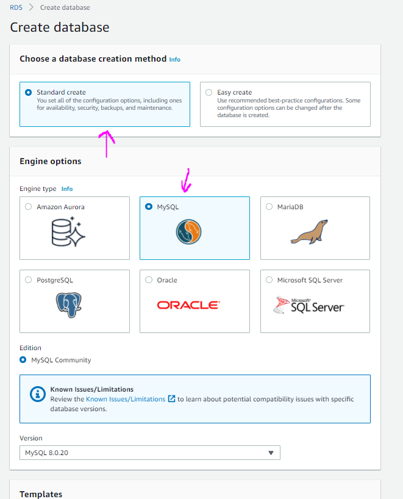 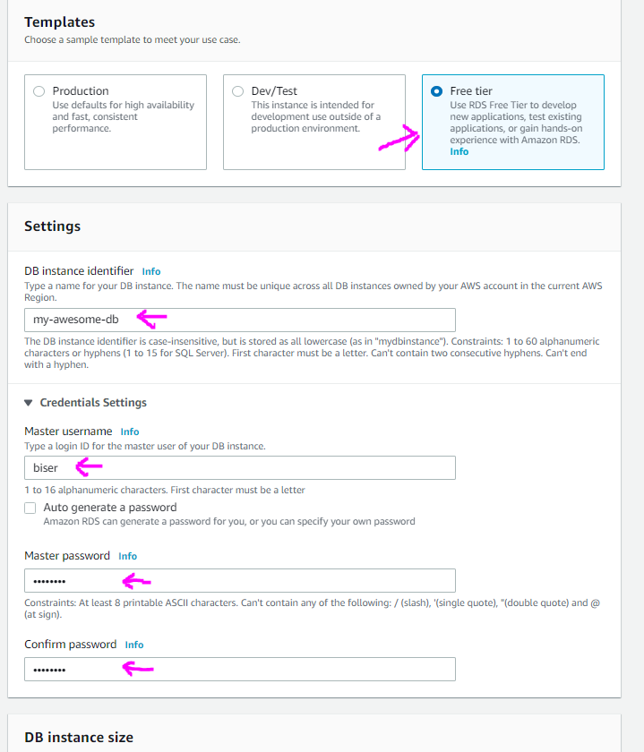 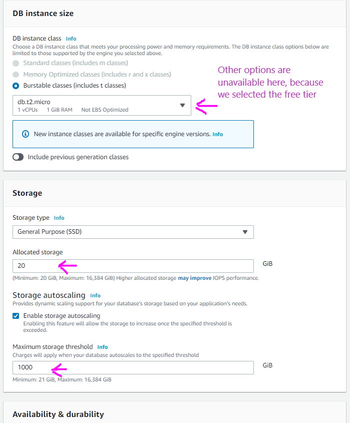 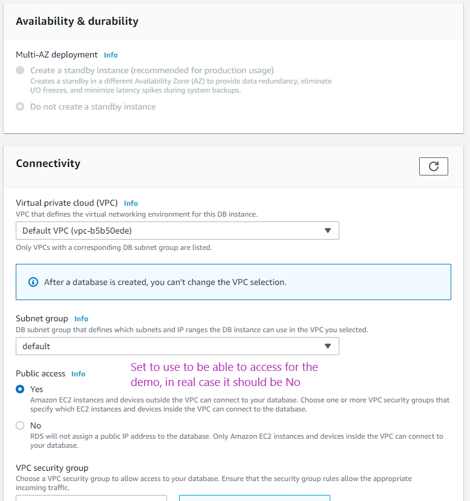 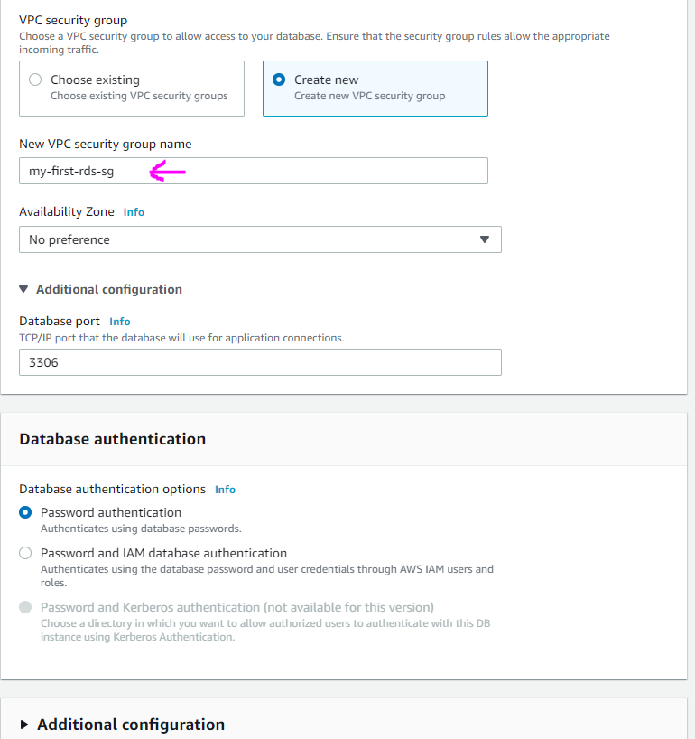 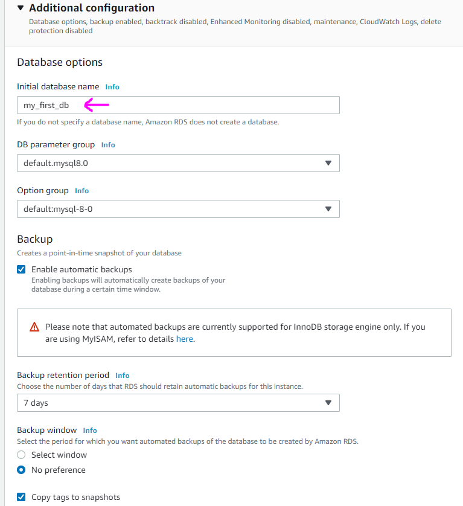 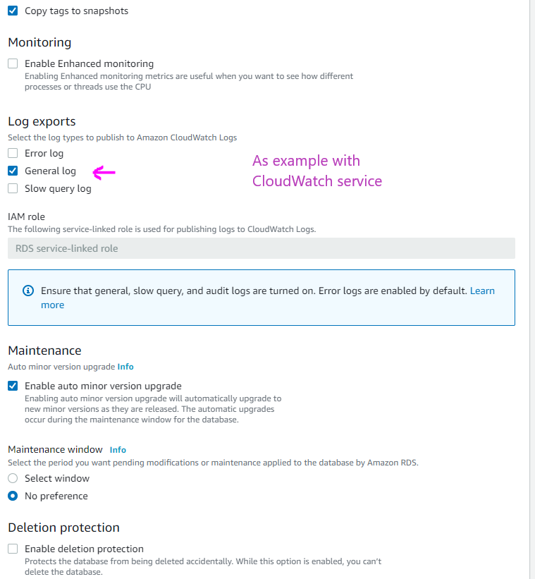 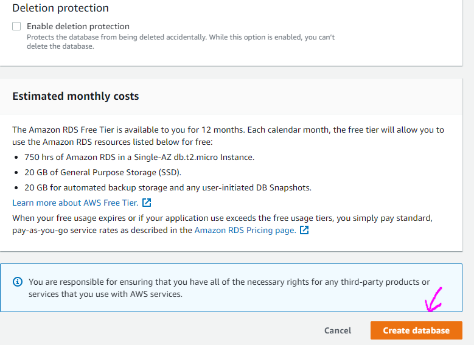After few minutes your db will be ready.
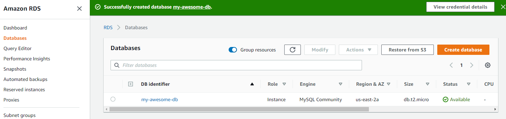Open your database to get the configurations for it.
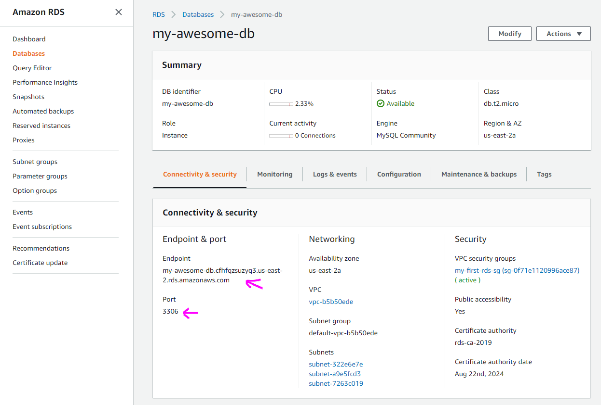Test it with MySQL Workbench by making new connection and connecting to our new db.
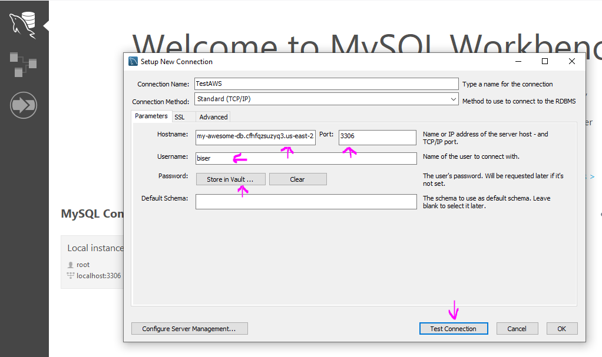And now we can run some test queries to test our db
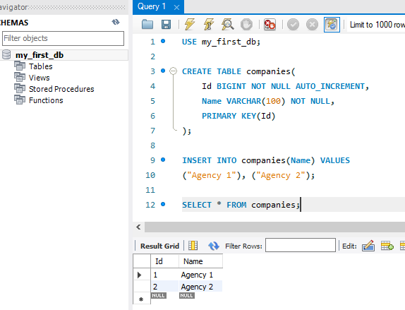